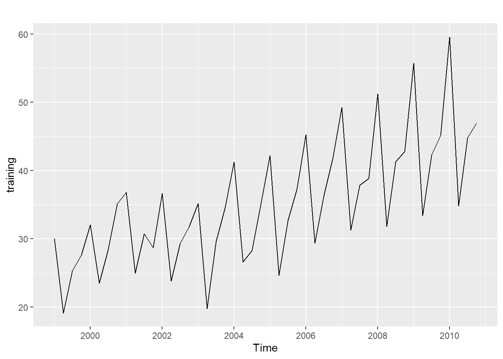
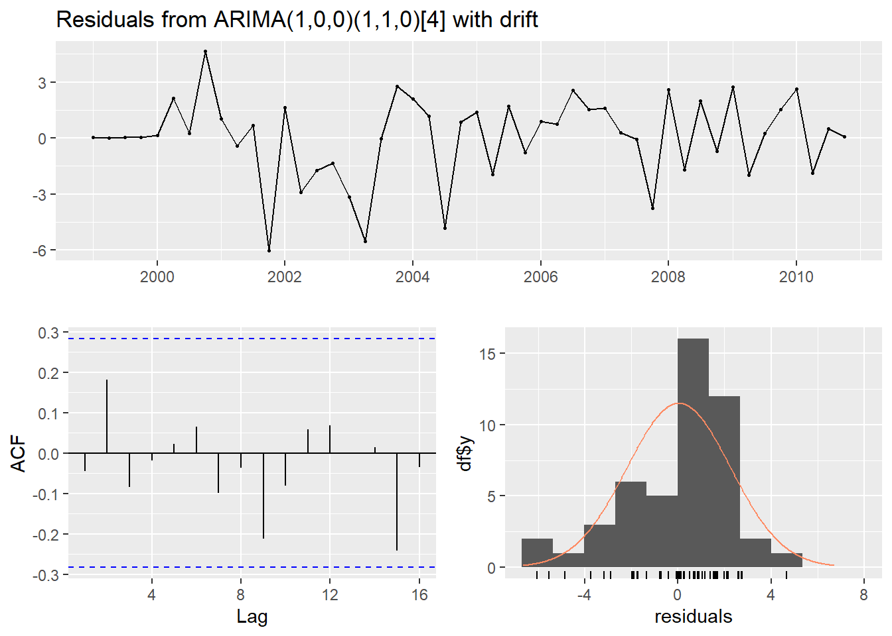
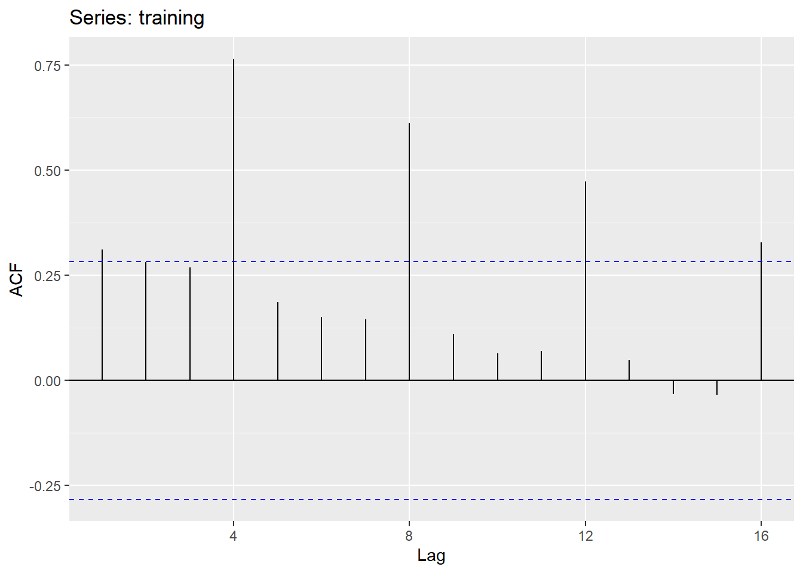
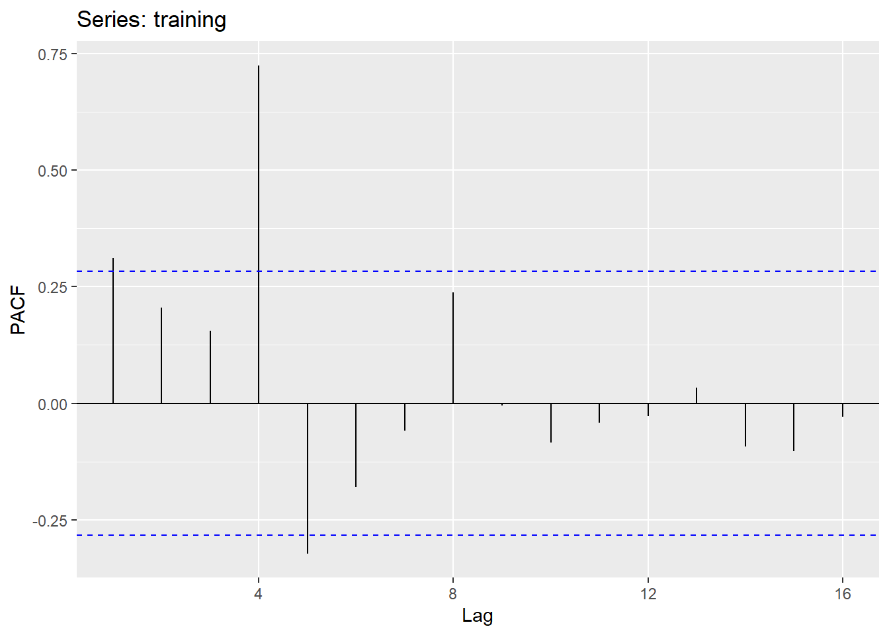
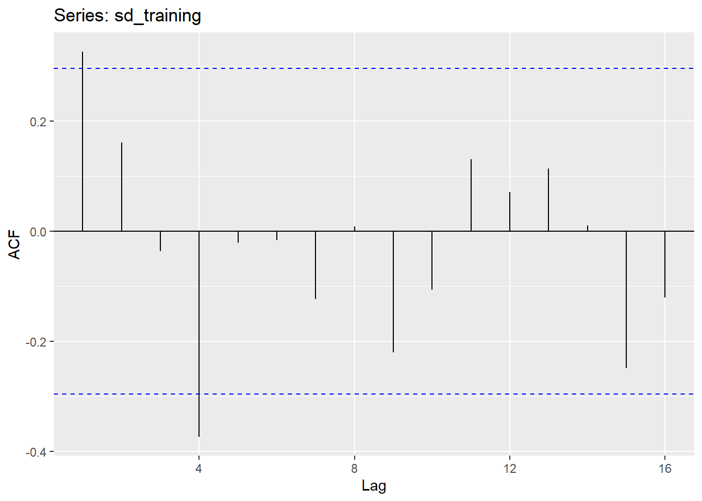
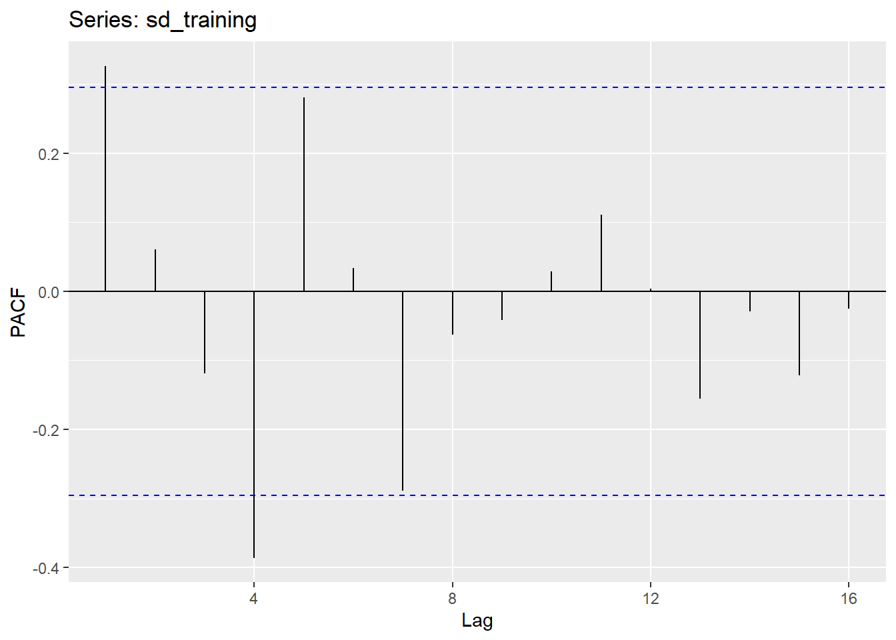
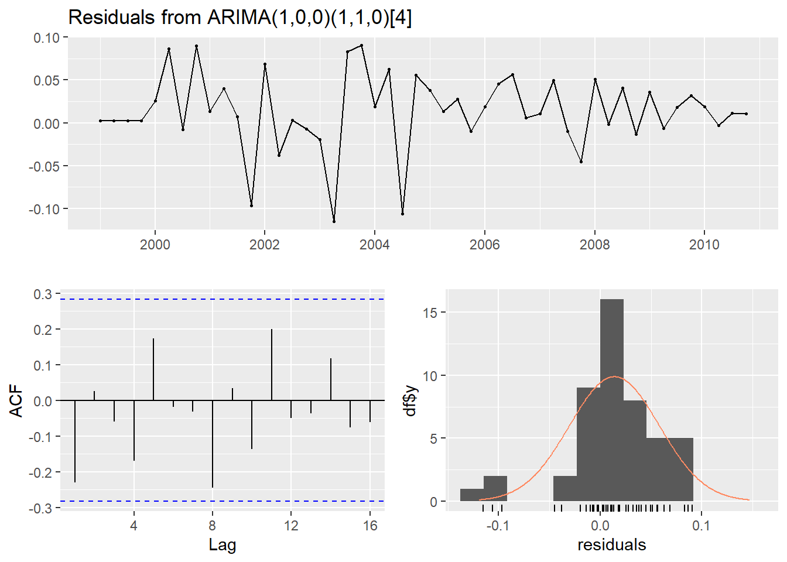

ARIMA or AutoRegressive Integrated Moving Average models have three parts: autoregression AR(p), integration I(d), and moving average MA(q) and are often written ARIMA(p,d,q) (FPP2 8.1). Seasonal data may have seasonal autoregression, integration, and moving averages as well. The seasonal component is written with capital letters and followed by the number of yearly seasonal observations. ARIMA(p,d,q)(P,D,Q)[m] (FPP2 8.9).
Auto.arima
Subset the data to create a training set using window(). To have Forecast calculate the appropriate ARIMA model for your data, simply pass the data to auto.arima.
library(fpp2)# create training settraining <-window(austourists, end=c(2010,4))# plot the training setautoplot(training)

# fit the model and forecast(tr_fit <-auto.arima(training))
Forecast quickly calculates an ARIMA(1,0,0)(1,1,0)[4] for the International Tourists to Australia data and forecasts 20 quarters ahead. However, you may not agree with the number of differences auto.arima uses to make the data stationary, so it’s a good idea to examine the ACF & PACF to verify auto.arima’s suggestion. If you disagree with auto.arima’s recommendation, you can use the d argument to force auto.arima to use the desired number of differences. You can also specify the order (non-seasonal components), seasonal (seasonal components), and include a mean or drift. Be aware that auto.arima will ignore a drift argument if the differencing is greater than 1.
# test the forecastcheckresiduals(tr_fc)

Ljung-Box test
data: Residuals from ARIMA(1,0,0)(1,1,0)[4] with drift
Q* = 3.1445, df = 6, p-value = 0.7905
Model df: 2. Total lags used: 8
(tr_acc <-accuracy(tr_fc, austourists))
ME RMSE MAE MPE MAPE MASE
Training set 0.03553001 2.20789 1.656523 -0.6591379 5.075788 0.5778755
Test set 2.67808084 3.86986 2.964032 4.6861651 5.142123 1.0339977
ACF1 Theil's U
Training set -0.04387455 NA
Test set 0.39353623 0.2915726
The accuracy function can pull the test data from the full set and return multiple measures.
Arima
If auto.arima returns a model with residuals that indicate room for a better model or you prefer, the Arima function can be used. Note: Stats has the arima() function while Forecast has Arima(). The best references I have found for estimating an ARIMA model are:
Penn State’s Identifying and Esimating ARIMA models from Stats 510 (Lesson 3) Their Stats 510 course is an excellent reference for understanding many forecasting methods.
Observe the Data
The first step in estimating an arima model is to check to see whether the data has a trend or increasing level. In the plot above we see an upward trend. In the ACF below, the training data has large positive seasonal lags which slowly decrease toward zero. We can use ndiffs() or nsdiffs() to determine the number of first order differences needed to make the data stationary.
# Check the ACF & PACF for stationarityggAcf(training)ggPacf(training)# determine the number of seasonal and non-seasonal differences needednsdiffs(training)sd_training <-diff(training, lag=4, differences=1)ndiffs(sd_training)# Recheck the ACF & PACFggAcf(sd_training)ggPacf(sd_training)
[1] 1
[1] 0




When we recheck the ACF & PACF on the seasonally differenced training data (adove), we can see that the large seasonal lags have been removed and the data appears stationary.
Transformations
Another feature of the tourist data is increasing quarterly variation, so we will transform the data using a Box-Cox transformation. More information on transformations is available in the Transformations and Adjustments chapter (FPP2 3.2)
Now we use the ACF & PACF of the seasonally differenced data to estimate the terms for the ARIMA.
ggAcf(sd_training)ggPacf(sd_training)
First, we examine the seasonal lags (every fourth lag since the data is quarterly). In both the ACF & PACF the first quarterly lag is outside the line of significance. However, in the PACF the seasonal lags decay (taper off). This suggests a seasonal MA compenent of 1. Next, we examine the non-seasonal lags. In the ACF, the non-seasonal lags almost taper, but in the PACF, the non-seasonal lags almost cut off.
This suggests a non-seasonal ARIMA(1,0,0) and a seasonal ARIMA(0,1,1). Remember, the seasonal difference of one was previously determined.
# fit then forecast(tr_ar <-Arima(training, order=c(1,0,0), seasonal=c(1,1,0), lambda = tr_lam))
tr_ar_fc <-forecast(tr_ar, h=20)# Check the forecastcheckresiduals(tr_ar_fc)
Ljung-Box test
data: Residuals from ARIMA(1,0,0)(1,1,0)[4]
Q* = 9.8567, df = 6, p-value = 0.1308
Model df: 2. Total lags used: 8
(tr_ar_acc <-accuracy(tr_ar_fc, austourists))
ME RMSE MAE MPE MAPE MASE
Training set 0.8973055 2.487752 1.914765 2.102611 5.701674 0.6679627
Test set 7.7328096 9.181161 7.763529 13.999936 14.051119 2.7082947
ACF1 Theil's U
Training set -0.2490813 NA
Test set 0.6527384 0.6868026

In this example, manually selecting the values actually decreases the accuracy of the ARIMA, possibly because this method is less reliable when the first lags of both the ACF & PACF are positive (FPP2 8.5). However, with the data I was using, manually estimating the model did result in better accuracy measures.